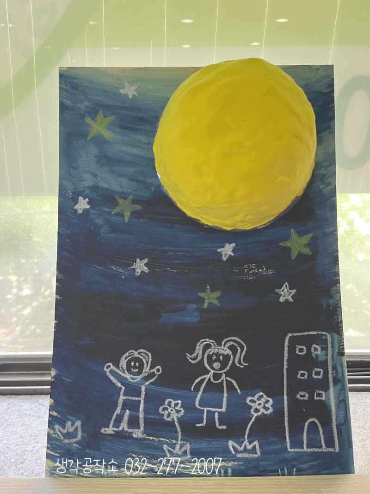
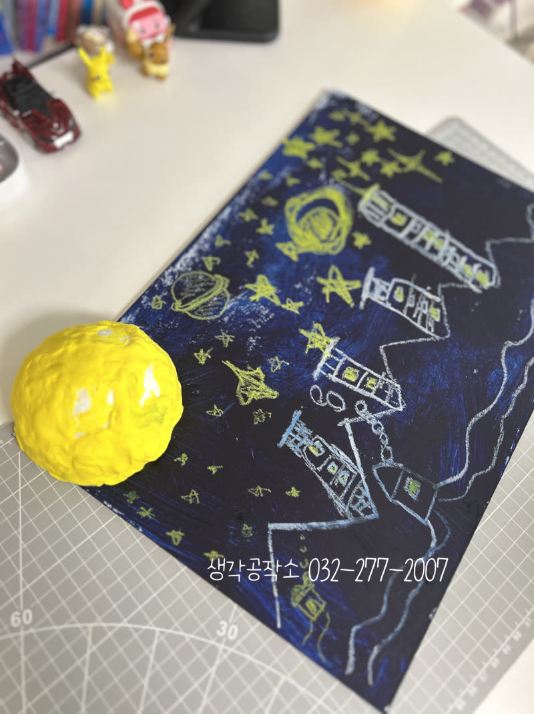
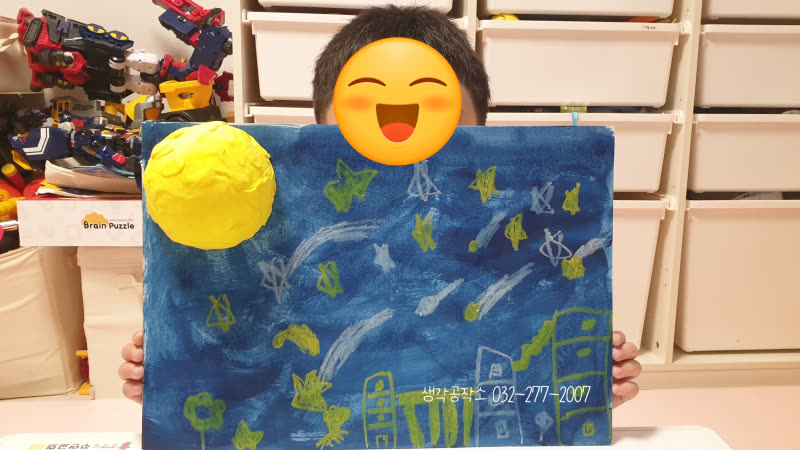
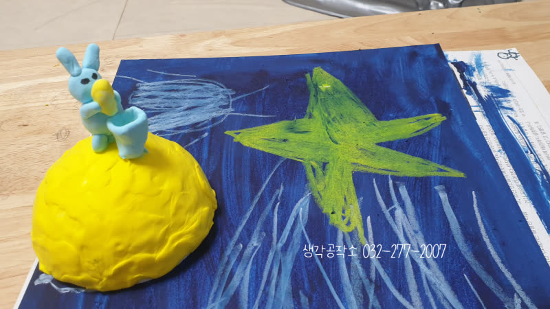
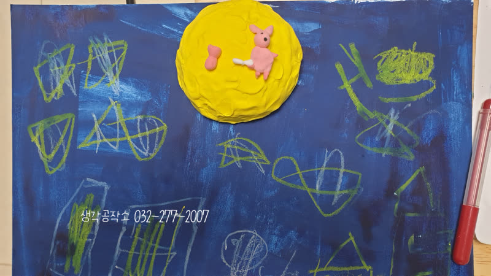
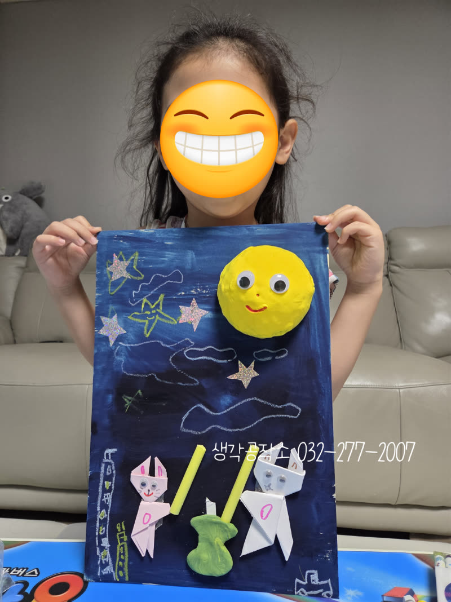
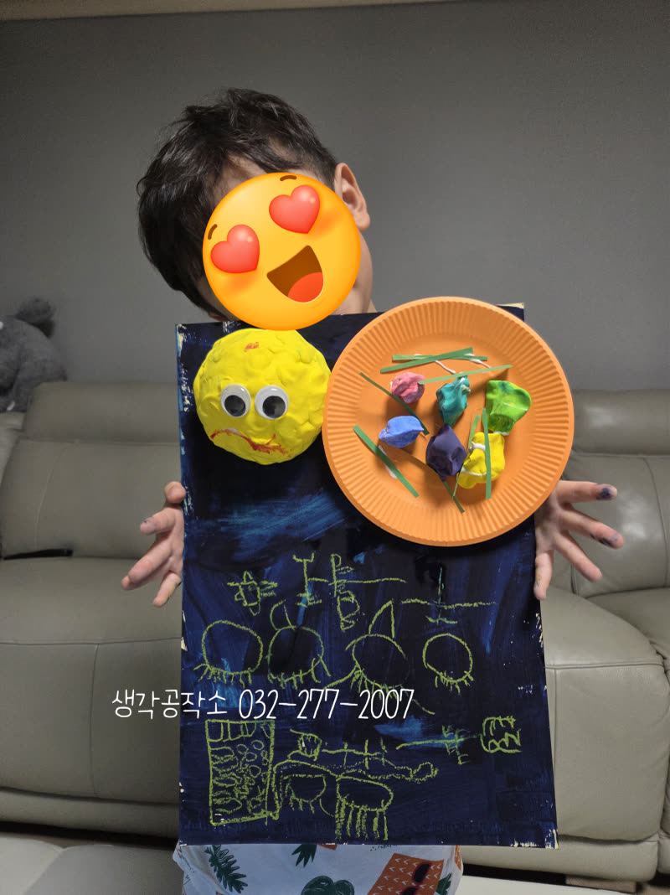
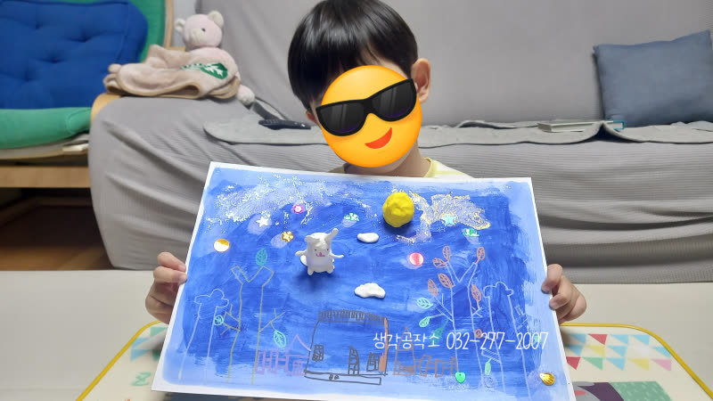
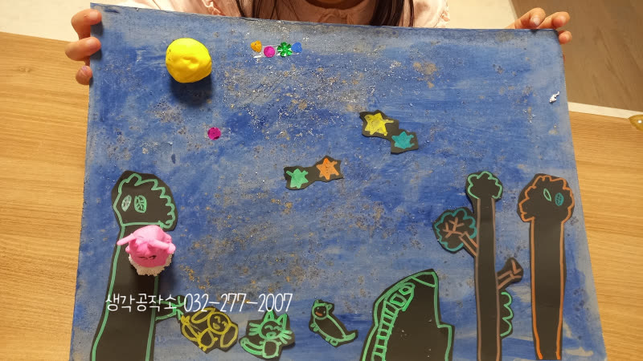

가을밤 보름달✨🌕을 담은 아이들의 특별한 작품 이야기 '달 밝은 밤'
안녕하세요, 생각공작소입니다. :)
10월의 어느 맑은 날, 우리 아이들과 함께 한
'달 밝은 밤' 활동을 소개합니다. 🌃🌕
가을밤 하늘을 수놓는 환한 보름달과 반짝이는 별들을
아이들의 상상력으로 담아내는 특별한 시간이었답니다. 🌙⭐


아이들은 먼저 선생님과 함께 동화책을 읽으며,
가을밤 밝게 빛나는 보름달을 마음속에 그려보는 시간을 가졌습니다. 😊
"달님은 어떤 모습일까?"
"달빛이 비추는 밤 풍경은 어떨까?"
조용히 동화 속 달빛과 그 풍경을 상상하며
아이들과 이야기를 나누다 보니,
평화로운 가을 밤의 정취가 자연스레 느껴졌습니다.🍂🌌
동화를 통해, 마음 속에 그린 풍경을
아이들의 손으로 직접 표현해볼 차례입니다 !



노란 점토로 빚은 동그란 보름달은,
마치 하늘에서 막 떠오른 것처럼 환하게 빛났고
그 위에 앉은 귀여운 토끼 친구는
아이들의 상상력이 더해진 특별한 손님이었답니다. 🐰
푸른 밤하늘 배경 위에
연두색과 하얀색 별들을 자유롭게 찍어내며
아이들만의 밤하늘이 완성되어 갔습니다. 🌠
한 아이는 큰 별 하나를 중심으로,
한 아이는 작은 별을 가득 채워 넣으며,
저마다의 개성이 담긴 작품을 만들어냈습니다.


밤하늘만으로는 부족했던 아이들은
달빛이 비추는 마을 풍경까지 그려냈습니다.
노란색과 연두색 크레파스로 그린 아파트, 집, 나무들이
달빛을 받아 은은하게 빛나고,
그 사이사이 창문에서 새어 나오는 불빛까지 표현하며
따뜻한 밤 풍경을 완성했습니다. 🏘️
한 아이는 작품을 완성한 후 "선생님, 우리 집도 있어요!"라며
자랑스럽게 보여주었답니다. 😊


한 아이는 노란 점토로 만든 달에
큰 눈을 붙여 웃는 얼굴을 만들어주었고,
또 다른 아이는 주황색 접시 위에,
알록달록한 꽃과 나뭇잎을 올려
달님께 대접할 특별한 음식을 준비하기도 했습니다. 🌼🍃
"달님, 맛있게 드세요!"
이번 '달 밝은 밤' 활동은
아이들의 상상력과 감성을 자극하며
오감 발달에도 큰 도움을 주었답니다.
아이들의 매 순간이 빛나는 추억으로 가득할 수 있도록,
생각공작소가 아이들의 오감을 깨우는
행복한 경험들을 계속 만들어가겠습니다! 🙌
오감 쑥쑥! 생각 쑥쑥!
📞 생각공작소 032-277-2007